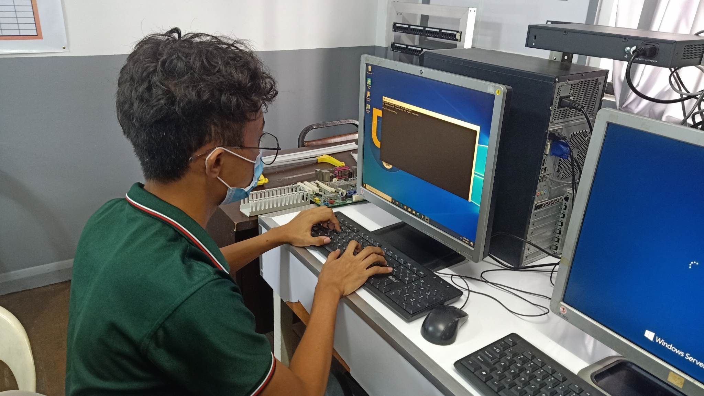
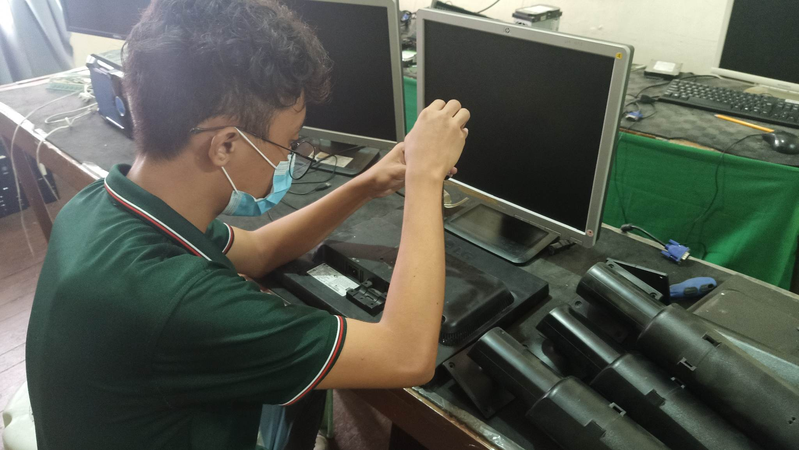
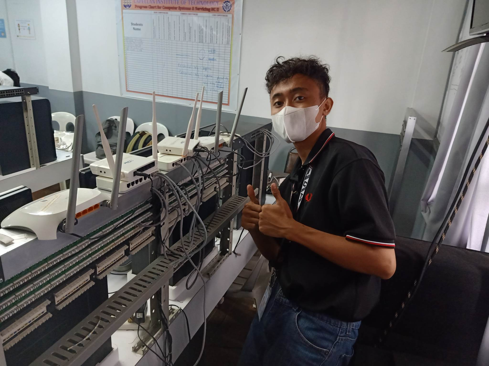
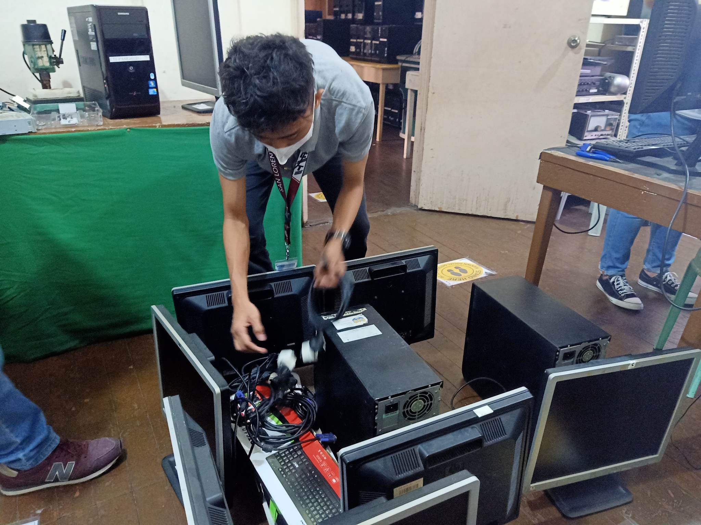

Work Immersion
About the Job
During my Work Immersion, I was tasked for diagnosing and repairing defective computers, troubleshooting hardware and software issues, setting up and maintaining network connections, and providing technical support to ensure systems operated efficiently. I also participated in hands-on training in preparation for the National Certificate (NC) assessment, where I strengthened my practical skills in computer systems servicing, troubleshooting, and networking. This experience allowed me to apply my technical knowledge in real-world situations while developing problem-solving, communication, and teamwork skills.
What I Contributed
Repaired and restored over 20 defective computers by diagnosing and resolving hardware and software issues, ensuring each unit was fully operational for daily use. I also configured and maintained the institute's network system, improving connectivity and supporting a more reliable IT infrastructure for staff and students. These contributions enhanced the overall efficiency of the institution's computer systems while providing dependable technical support.
Photos



